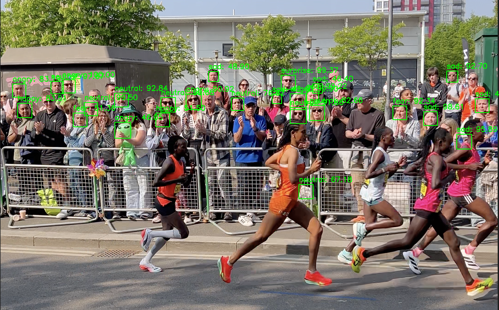
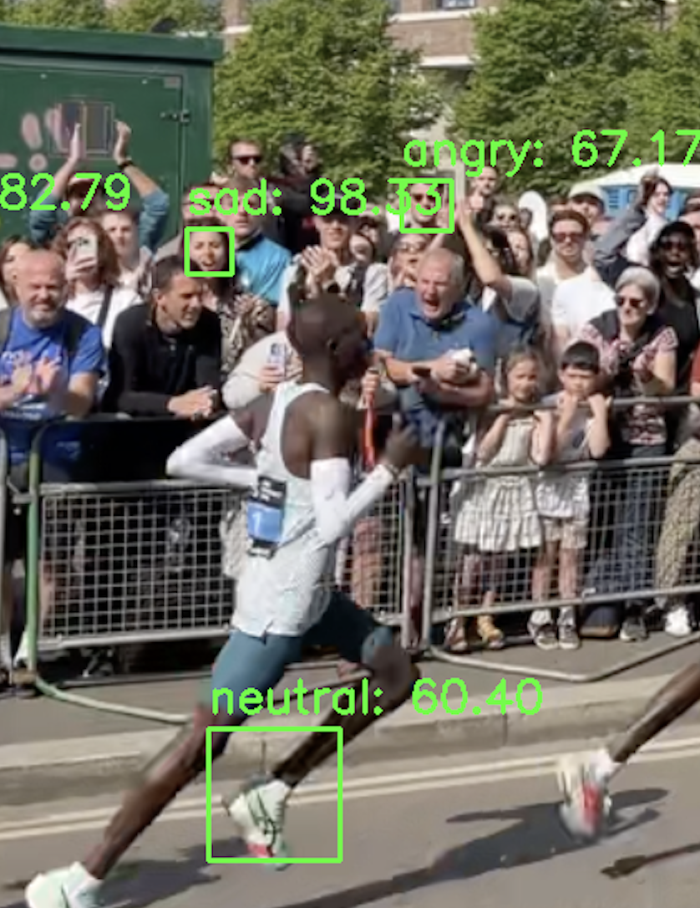
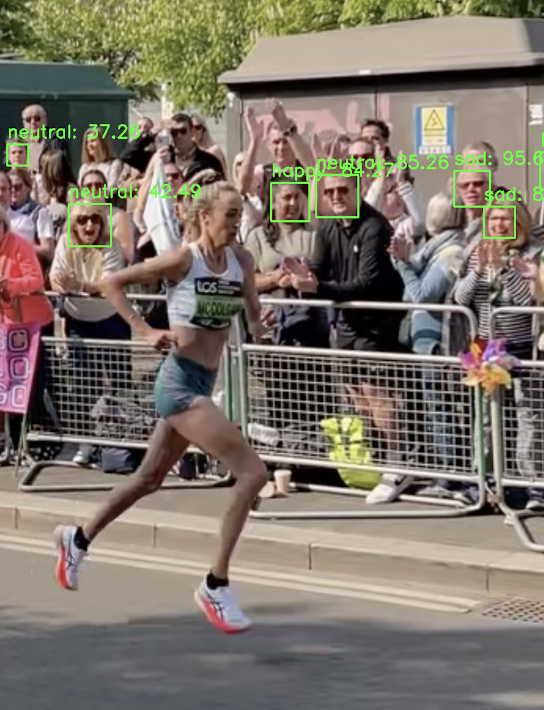

Feeling the Crowd
Computational Analysis | Machine Learning | Data Visualisation
A computational investigation into the emotional atmosphere of the TCS London Marathon. Treating the marathon as a complex human system, this project explores how computational tools can be used to analyse crowd behaviour, collective emotion, and spectator support during a large-scale public event.
Project Aim
To investigate changes in emotional atmosphere using computer vision and audio analysis, identifying crowd dynamics that could inform improvements to the runner experience.

Investigation Questions
(1) How does emotional atmosphere change throughout a marathon?
(2) What social patterns emerge between runners and spectators?
(3) How can these insights improve event accessibility?
(4) Can computational tools visualise public emotion?
(5) Can computational tools effectively analyse mass events?


Python DeepFace Analysis
Real-world conditions such as crowd density and inconsistent image quality caused unreliable facial detection and emotion classification.
This highlighted the limitations of relying solely on AI-based emotion recognition in uncontrolled environments.
Software & Methods
(1) Python used to develop the project
(2) DeepFace library used for facial emotion recognition
(3) Librosa used for audio analysis through RMS loudness extraction
(4) Data collected was processed and stored in JSON format
Combining emotion detection with audio analysis revealed patterns in crowd support, while highlighting the limitations of AI in real-world environments. These insights suggest how real-time data could improve spectator distribution, runner morale and the overall marathon experience.